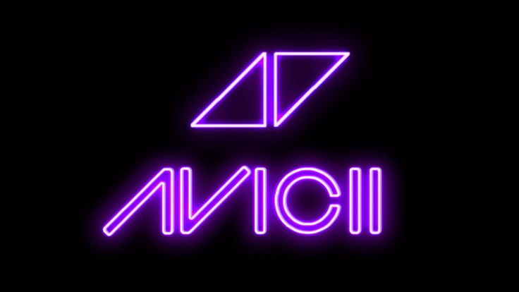

Feeling my way through the darkness
Guided by a beating heart
I can't tell where the journey will end
But I know where to start
They tell me I'm too young to understand
They say I'm caught up in a dream
Well life will pass me by if I don't open up my eyes
Well that's fine by me
So wake me up when it's all over
When I'm wiser and I'm older
All this time I was finding myself
And I didn't know I was lost
So wake me up when it's all over
When I'm wiser and I'm older
All this time I was finding myself
And I didn't know I was lost
I tried carrying the weight of the world
But I only have two hands
I hope I get the chance to travel the world
And I don't have any plans
I wish that I could stay forever this young
Not afraid to close my eyes
Life's a game made for everyone
And love is a prize
So wake me up when it's all over
When I'm wiser and I'm older
All this time I was finding myself
And I didn't know I was lost
So wake me up when it's all over
When I'm wiser and I'm older
All this time I was finding myself
And I didn't know I was lost
I didn't know I was lost
I didn't know I was lost
I didn't know I was lost
I didn't know I was lost